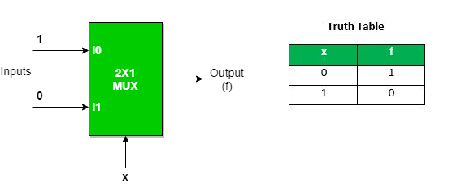
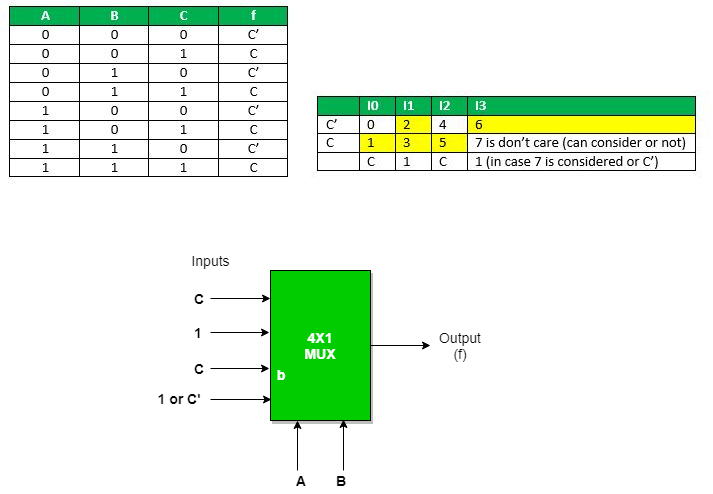
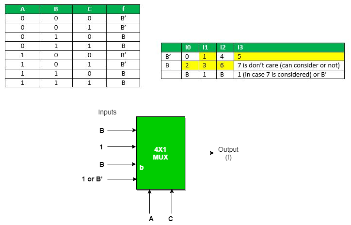

It is a combinational circuit which have many data inputs and single output depending on control or select inputs. For N input lines, log n (base2) selection lines, or we can say that for 2n input lines, n selection lines are required. Multiplexers are also known as “Data n selector, parallel to serial convertor, many to one circuit, universal logic circuit”. Multiplexers are mainly used to increase amount of the data that can be sent over the network within certain amount of time and bandwidth.

Now the implementation of 4:1 Multiplexer using truth table and gates.


Multiplexer can act as universal combinational circuit. All the standard logic gates can be implemented with multiplexers.
a) Implementation of NOT gate using 2 : 1 Mux
NOT Gate :

We can analyze it
Y = x’.1 + x.0 = x’
It is NOT Gate using 2:1 MUX.
The implementation of NOT gate is done using “n” selection lines. It cannot be implemented using “n-1” selection lines. Only NOT gate cannot be implemented using “n-1” selection lines.
b) Implementation of AND gate using 2 : 1 Mux
AND GATE

This implementation is done using “n-1” selection lines.
c) Implementation of OR gate using 2 : 1 Mux using “n-1” selection lines.
OR GATE

Implementation of NAND, NOR, XOR and XNOR gates requires two 2:1 Mux. First multiplexer will act as NOT gate which will provide complemented input to the second multiplexer.
d) Implementation of NAND gate using 2 : 1 Mux
NAND GATE

e) Implementation of NOR gate using 2 : 1 Mux
NOR GATE

f) Implementation of EX-OR gate using 2 : 1 Mux
EX-OR GATE

g) Implementation of EX-NOR gate using 2 : 1 Mux
EX-NOR GATE

Implementation of Higher order MUX using lower order MUX
a) 4 : 1 MUX using 2 : 1 MUX
Three(3) 2 : 1 MUX are required to implement 4 : 1 MUX.

Similarly,
While 8 : 1 MUX require seven(7) 2 : 1 MUX, 16 : 1 MUX require fifteen(15) 2 :1 MUX, 64 : 1 MUX requires sixty three(63) 2 : 1 MUX.
Hence, we can draw a conclusion,
2n : 1 MUX requires (2n- 1) 2 : 1 MUX.
b) 16 : 1 MUX using 4 : 1 MUX

In general, to implement B : 1 MUX using A : 1 MUX , one formula is used to implement the same.
B / A = K1,
K1/ A = K2,
K2/ A = K3
………………
KN-1 / A = KN = 1 (till we obtain 1 count of MUX).
And then add all the numbers of MUXes = K1 + K2 + K3 + …. + KN.
For example : To implement 64 : 1 MUX using 4 : 1 MUX
Using the above formula, we can obtain the same.
64 / 4 = 16
16 / 4 = 4
4 / 4 = 1 (till we obtain 1 count of MUX)
Hence, total number of 4 : 1 MUX are required to implement 64 : 1 MUX = 16 + 4 + 1 = 21.
An example to implement a boolean function if minimal and don’t care terms are given using MUX.
f ( A, B, C) = Σ ( 1, 2, 3, 5, 6 ) with don’t care (7) using 4 : 1 MUX using as
a) AB as select : Expanding the minterms to its boolean form and will see its 0 or 1 value in Cth place so that they can be placed in that manner.

b) AC as select : Expanding the minterms to its boolean form and will see its 0 or 1 value in Bth place so that they can be place in that manner.

c) BC as select : Expanding the minterms to its boolean form and will see its 0 or 1 value in Ath place so that they can be place in that manner.